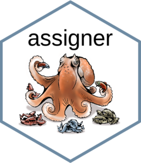

assigner 
The name assigner |əˈsʌɪn| is rooted in the latin word assignare. It’s first use in french dates back to XIIIe.
For the logo, I was inspired by the Northern Atlantic Octupus. I was fortunate to spent a lot of times with one during my PhD. These incredible creatures have 8 arms and thousands of suckers that they can control independently. Octopus are really the best multitaskers. The logo was designed by the artist Claude Thivierge.
Genomic datasets produced by next-generation sequencing techniques that reduce the size of the genome (e.g. genotype-by-sequencing (GBS) and restriction-site-associated DNA sequencing (RADseq)) have a huge numbers of markers that hold great potential and promises for assignment analysis. After hitting the bioinformatic wall with the different workflows you’ll likely end up with several folders containing whitelist and blacklist of markers and individuals, data sets with various de novo and/or filtering parameters and … missing data. This reality of GBS/RADseq data is quite hard on GUI software traditionally used for population assignment analysis. The end results are usually poor data exploration, constrained by time, and poor reproducibility.
assigner was tailored to make it easy to conduct population assignment analysis using GBS/RADseq data within R. Additionally, combining the use of tools like R Notebook, RStudio and GitHub will make effortless documenting your workflows and pipelines.
The keywords here to remember:
- 3 differents algorithms implemented: frequentist, likelihood and machine learning
- cross-validation techniques: classic Leave-One-Out (LOO) and Training, Holdout, Leave-one-out (THL) with marker selection
- resampling/bootstrap/subsampling
- fast Fst WC84 implementation)
- ggplot2-based plotting!
- https://thierrygosselin.github.io/assigner/
Installation
To try out the dev version of assigner:
if (!require("devtools")) install.packages("devtools") devtools::install_github("thierrygosselin/assigner") library(assigner)
If you plan on using gsi_sim inside assigner, you need an additional step:
With UNIX
assigner::install_gsi_sim(fromSource = TRUE)
With PC
assigner::install_gsi_sim()
- web site and additional info: https://thierrygosselin.github.io/assigner/
- Computer setup - installation - troubleshooting
- assigner’s assumptions
- assigner’s features
- Function’s documentation
- Vignettes
- How to cite assigner: inside R type
citation("assigner")
Life cycle
assigner is maturing, but in order to make the package better, changes are inevitable. Experimental functions will change, argument names will change. Your codes and workflows might break from time to time until assigner is stable. Consequently, depending on your tolerance to change, assigner might not be for you.
- Philosophy, major changes and deprecated functions/arguments are documented in life cycle section of functions.
- The latest changes are documented (here) and in changelog, versions, new features and bug history
- issues and contributions